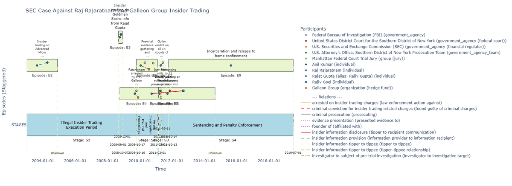
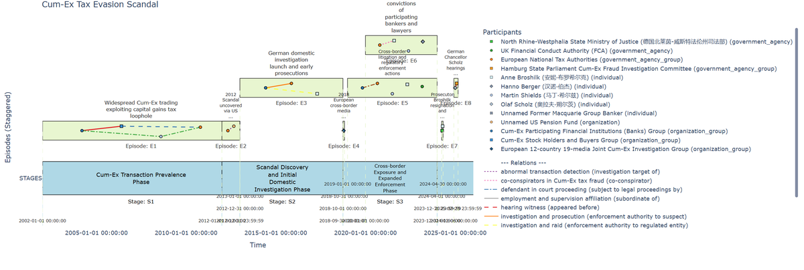
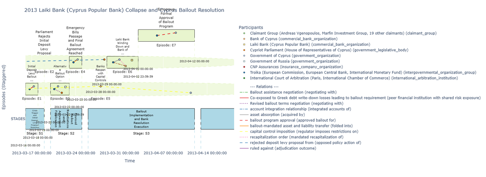

Core-1000 benchmark release
H²EPR-Bench
An evidence-traceable benchmark for event-process reconstruction.
H²EPR-Bench evaluates whether models can reconstruct hierarchical heterogeneous Event-Process Graphs from fixed evidence contexts.
Background & Motivation
Real-world events rarely unfold as single summaries or flat timelines. They involve staged development, participants entering at different times, actions that trigger responses, and evidence that supports different components of the process.
H²EPR-Bench focuses on fixed-evidence event-process graph reconstruction: given the same evidence context, a model must recover what happened, how the process evolved, and how event components are supported.
Benchmark Construction
Fixed-evidence reconstruction
Each system receives an event descriptor and a fixed public evidence context, then returns a structured Event-Process Graph.
Medium-granularity Gold
Official scores are computed against gated Gold references. Public artifacts support browsing, presentation, and reuse.
Hierarchical heterogeneous representation
The target representation covers macro stages, stage-internal structure, participants, actions, relations, temporal anchors, and evidence links.
Diagnostic graph matching
Evaluation compares structural fidelity, temporal consistency, action-result logic, and evidence traceability.

Interactive Explorer
The Explorer provides the public browsing layer for event metadata, stage tables, timeline views, and sanitized graph artifacts.
Visual asset roadmap
- Explorer screenshot: required for the next visual pass.
- Redrawn construction figure: required before final paper-linked release.
- Larger event-process panel: current previews are used as interim assets.
Dataset Overview
Core-1000 spans six domains and twenty-six event categories, with stage-level records and public inspection artifacts aligned by canonical event IDs.


Representative Event Processes
FinalCascade-derived event timelines.



Results & Diagnostics
Direct reconstruction results show that preserving evidence-bearing content is easier than reconstructing temporal and mechanistic process structure.
| System | Valid outputs (%) | QualityScore | Structure | Temporal | Mechanistic | Evidence |
|---|---|---|---|---|---|---|
| Loading leaderboard data... | ||||||


Access

Citation
@misc{h2eprbench2026,
title = {H²EPR-Bench: An Evidence-Traceable Benchmark for Event-Process Reconstruction},
author = {AgenticFinLab},
year = {2026},
note = {Forthcoming}
}